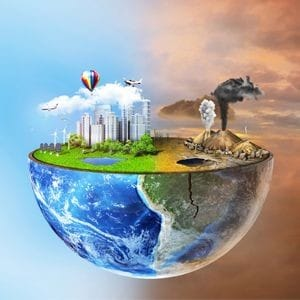
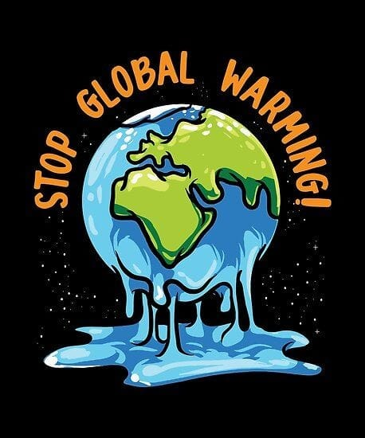
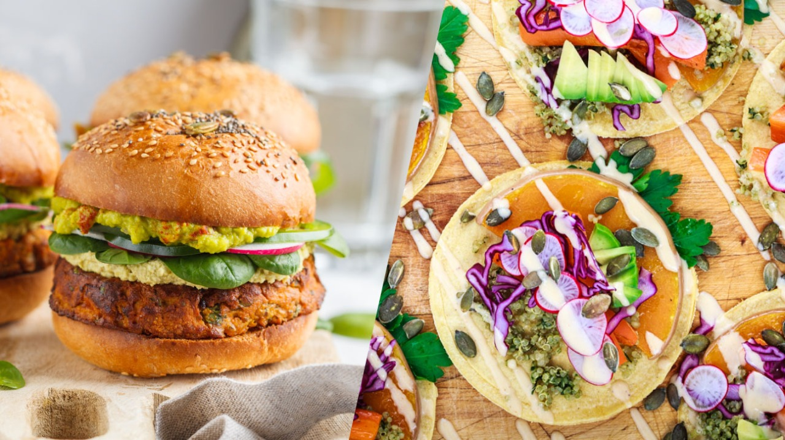

<!DOCTYPE html>
<html>
    <head>
        <meta charset="utf-8" />
        <title>The Climate Change</title>
        <link rel="stylesheet" href="master3.css"/>
        <link rel="preconnect" href="https://fonts.googleapis.com">
    </head>
    <body>
        <div class="title">
            <h1>CLIMATE CHANGE</h1>
        </div>
        <br><br>
        <div class="first"><h2>THE HUMAN BEING AND THE CHANGES</h2></div>
        <br>
        <div class="doaa">
            
            <span class="rono"><p>Are you aware of your relationship with climate change?</p></span>
        <br>
        <p>Daily you are frequented by phrases such as "Prepare for green," "Contribute to planting a tree," "You 
            are the beginning..."<br>
            You must have wondered why initiatives and States are so keen to change your own behavior or 
            encourage you to do something. The answer was:<br>
            To stop climate change and environmental sustainability<br>
            And here you start your mind wondering about your relationship to the occurrence of climate change, 
            and how do you contribute to environmental sustainability? Is it your mission or that of States?
            In fact, your relationship boils down to the behaviors you follow in your life, the way you deal with waste 
            and leftovers, the way you make supplies that have a negative impact on the environment and 
            contribute to climate change, so changing these behaviors is the beginning of stopping changes.
            Here, a new question emerges: What is the negative impact of these behaviors?<br>
            When you keep parts of your food and dispose of them in an environmentally unfriendly manner that 
            emits greenhouse gases, when you burn leaves, you emit greenhouse gases, when you burn or dispose 
            of plastic in environmentally unfriendly ways.<br>
            Greenhouse gases emitted in abundance from your wrong behavior have led to climate change by 
            punching the ozone layer, and harmful rays from the sun have been carried out and there has been 
            global warming (some form of change), which has already affected life, organisms and plants.
            So the task of stopping is not only the mission of states and their scientists but also your mission, let's 
            change.
            </p>
        <br>
        </div>
        <br>
        <div class="first"><h2>PLASTIES AND CLIMATE CHANGE</h2></div>
        <br>
        <div class="doaa">
            
            <p>In the light of the discussions on environmental sustainability and stopping changes, the most 
                important are:<br>
                The relationship of plastic to climate change and its danger to the environment, but in fact the role 
                of plastic in this change is indirect, and we may overlook it, destroying the environment, 
                disappearing organisms and disappearing humans.<br>
                The spread of plastic is increasing day by day, especially in seas, oceans and sewers, According to 
                the UN organization, about 13 million tonnes of plastic waste is dumped into the oceans annually, 
                This poses a risk to the environment over time, and increased plastic use later results in damage 
                affecting the environment in general, and thus may indirectly affect climate change.<br><br>
                When pieces of plastic found in water are fragmented and easily swallowed by the fish, which in 
                turn affects humans after eating the fish, some of the two may either become extinct after a while 
                due to plastic asphyxiation, or the same person may eat the fish in his or her own food, thus 
                affecting his or her health.<br>
                And don't forget to burn plastic either; They emit toxic emissions, including greenhouse gases, 
                namely carbon dioxide, methane, nitrous oxide, and industrial gases, which alter air-forming gases, 
                and are responsible for global warming at the basis of climate change.<br><br>
                So if we want to preserve the environment, plastic has to be replaced by environmentally friendly 
                materials, and until we find it, we have to change human behavior in dealing with plastic.
                </p>
        </div>
        <br>
        <div class="doaa">
            
            <span class="rono"><p>What if you turn an empty packet of milk 
                into a scoop?</p></span>
            <br>
            <p>Where you can use a plastic milk case, a 
                yoghurt case or any other box made of 
                plastic after you've finished using it and 
                unloading the content in it can be turned 
                into a scoop to collect dust and dirt by 
                cutting a portion of one corner of the case 
                to insert dust and dirt after assembling it at 
                one point into the home
                -designed plastic 
                scoop when recycling a medium
                -sized 
                plastic case.</p>
        </div>
        <br>
        <div class="doaa">
            
            <span class="rono"><p>What if you have a little house nursery?
            </p></span>
            <br>
            <p>You can use plastic cans after recycling where:
                Plastic packaging can be used if the top is 
                damaged by cutting and leaving a third or a little 
                more; To put soil in a suitable amount in addition to 
                planting a small plant seed inside.
                Here it is advised to choose plastic boxes of sizes to 
                match this purpose.
                </p>
        </div>
        <br>
        <div class="doaa">
            
            <span class="rono"><p>What if you made home lighting on your own?
            </p></span>
            <br>
            <p>In case you have a plastic packet in the shape of a 
                beautiful or attractive baby such as an animal-shaped case or a cartoon character the baby loves, 
                when damaged this can be recycled and turned 
                into a light bulb by opening the bottom of it and 
                installing the lighting base (bulb), placing a small 
                bulb or light bulb for lighting and re-closing and 
                attaching the bottom well, then puncturing a hole to 
                remove the electrical wire; To be made light home 
                lighting for kids.                
                </p>
        </div>
        <br>
        <div class="doaa">
            
            <span class="rono"><p>What if your house decorations are your 
                own making?                
            </p></span>
            <br>
            <p>Once finished, and specifically made of 
                plastic, shampoo cans can be utilized by 
                using them to make beautiful decorations 
                and shape for children, for example, they can 
                be colored or wrapped in attractive coloured
                fabric and then stuck two cartons on either 
                side of the shampoo case to give the shape 
                of an airplane that can be hung in the room, 
                or make office decorations in it.              
                </p>
        </div>
        <br>
        <div class="doaa">
            
            <span class="rono"><p>What if you made an irrigation box on your 
                own?       
            </p></span>
            <br>
            <p>Empty laundry detergent packaging can be 
                exploited to make a can to irrigate plants, 
                and this is done by making some small holes 
                on the packaging lid and installing it, thereby 
                making the irrigation case ready for use, and 
                the patch of the cleanser on the packaging 
                can be removed to your liking.              
                </p>
        </div>
        <br>
        <div class="first"><h2>PAPERS AND CLIMATE CHANGE</h2></div>
        <br>
        <div class="doaa">
            
            <p>Today, the production of paper or the manufacture of white paper around the world has become an environmentally destructive weapon; because many 
                production cycles are adversely affected from logging to industry itself to the methods on which many States rely; for the handling of papers and 
                incineration processes for disposal of waste caused by the leaves; So anyone trying to break through the field of paper production around the world will 
                consider the negative impact (of paper production) on the environment, causing dozens of questions, and start asking questions about what are the 
                hidden risks in global paper production? What's the reason for hiding? Prevent burning or burying behind documents?<br>
                The demand for paper has led to some serious effects on the environment. nearly 35% of felled trees each year feed into the paper industry with 9% of these 
                trees originating from ancient growth forests, A hard resource to replenish, paper mills also represent large sources of water and air pollution, It releases 
                multiple greenhouse gases into the environment and releases toxic bleaching products into the groundwater level and all of these impacts are directly 
                involved in climate change and their persistence is completely destructive of the environment because we are in great need of forests and trees. So if we 
                want to save the environment, an environmentally friendly solution must be found and implemented as soon as possible.<br>
                With the emergence of leaf influence on the environment pushing governments to make eco-friendly paper from rice straw that burned it was causing 
                huge air pollution and thus reducing the proportion of logging and the process of making paper from rice straw is completely manual, It produces a distinct, 
                multi-purpose type of paper, such as writing, drawing, printing and the manufacture of all paper products; Thus, greenhouse gases are not emitted; 
                Because the industry is manual rather than chemical mechanical, where steps start by getting rice straws in the form of pistons, which are soaked in water 
                from two days to a week, then placed on the fire, then washed with water and grinded into a special mill to be placed in basins, placed in frames 
                depending on the size of the paper required and finally placed on the wall and left behind.<br>
                But is this technology alone working? Of course not; Because it lacks your role in handling paperwork and your role is divided into (conscious-executive):
                - You must subscribe to awareness initiatives using eco-friendly papers or how to handle white papers for the least harm.<br>
                Your executive role:<br>
                - Recycling white papers in an environmentally friendly way.<br>
                - Reducing the use of paper is irreplaceable through the use of technology.<br>
                - No recourse to burning papers.<br>
                - Support the green space by contributing to planting trees in front of your home or in the neighborhood to reduce what comes from leaf factories.<br>
                </p>
        </div>
        <br>
        <div class="doaa">
            
            <span class="rono"><p>What if you stab a storage bag?
            </p></span>
            <br>
            <p>You can convert unused cartoon boxes into bags for 
                storing things, such as children's toys, books or home 
                supplies. Just cover the box with a cloth, as well as 
                use any old strap you don't use for a bag, and if you 
                like to decorate the bag more you can stick 
                whatever you like roses.                          
                </p>
        </div>
        <br>
        <div class="doaa">
            
            <span class="rono"><p>What if I made a paper frame for the photos?
            </p></span>
            <br>
            <p>You can use the surplus paper and you don't 
                want it by creating several layers of it to 
                become reinforced and cut it and then put 
                the images and decorate it as you like.                        
                </p>
        <br>
        </div>
        <br>
        <div class="doaa">
            
            <span class="rono"><p>What if you made a robot out of boxes?
            </p></span>
            <br>
            <p>Make a robot out of cereal packaging and 
                remaining cardboard and other small cardboard 
                boxes like those used to wrap toothpaste and bring 
                some duct tape and glue, the ideas are as limited to 
                them as the baby's imagination, and for a finish, 
                draw the eye and ear to give the final shape.                                       
                </p>
        <br>
        </div>
        <div class="doaa">
            
            <span class="rono"><p>What if your tools are paper?
            </p></span>
            <br>
            <p>You can recycle the leaves to make a pinstripe, 
                cut the cartoon leaves rectangularly
                longitudinal, and also make 5 large single circles 
                to use as a base for the pinstripe, two smaller 
                circles and two smaller ones in a different color 
                to make the eyes, make 4 long slices of the 
                same paper to make the ears, stabilize both 
                ends of the paper.<br>
                Install the larger circle at the base and then 
                stabilize the smaller circles from the front and 
                then place on top of each one a circle of tiny 
                ones that you've done in a different color to 
                make the eyes work as you see in the picture.<br>
                The final step is to install the long strips from 
                above to make the ears.<br>
                And with that step, the pinstripe is ready for use.                                  
                </p>
        <br>
        </div>
        <div class="doaa">
            
            <span class="rono"><p>What if I made a paper basket?
            </p></span>
            <br>
            <p>Bring many of your available magazine papers and 
                apply them to three, then bend them until you get a 
                thick, longitudinal shape,
                After you do all the leaves you have like this, insert 
                each longitudinal shape into the other as you have 
                in the picture, taking into account the shape of the 
                basket you want to make a circular, rectangular or 
                cube.<br>
                After you're done, you'll have a nice little basket to 
                put on anything you like.                                                  
                </p>
        <br>
        </div>
        <br>
        <div class="doaa">
            
            <span class="rono"><p>What if I made a paper house to decorate?
            </p></span>
            <br>
            <p>You can use the papers to make an aesthetic home 
                for your home decor.<br>
                Bring colourful cartoon paper from your available and 
                cut it the way you are pictured and do a rectangle of 
                paper to put it as a home surface.<br>
                Do the shape of the house as you like with waxing.
                Use pencil to paint what house you want from the front
                The color of what you've painted and tried to diversify 
                into colors so that you could give the drawing an 
                aesthetic touch.<br>
                The last step; Wax and bend the rectangle from the 
                top until it gives you a triangle shape as a home 
                surface and so the house is ready to decorate.                                                
                </p>
        <br>
        </div>
        <br>
        <div class="first"><h2>LEFTOVERS AND CLIMATE CHANGE</h2></div>
        <br>
        <div class="doaa">
            
            <P>Many believe that the climate changes occurring are caused by fossil fuels, factories, transportation and other causes but 
                what about food?<BR>
                For an initial moment without thinking you'll clear food 'and think' it's harmful to health only, but actually food is not only 
                harmful to health, it's harmful to the environment as well, and that's where your mind starts to wonder about how food 
                relates to changes?<BR>
                and sometimes preparation, consumption and disposal. Each of these steps generates greenhouse gases that trap the 
                sun's heat and contribute to climate change, with more than a third of human-caused greenhouse gas emissions linked to 
                food.<br>
                The bulk of food-related greenhouse gases come from agriculture and land use. This includes, for example:
                Methane from cattle digestion,<br>
                N2O from fertilizers used in crop production,<br>
                CO2 from cutting forests to expand agricultural land, Other agricultural emissions from manure management, rice 
                cultivation, crop residue burning and farm fuel use.<br>
                Ways to get rid of everyday, eco-friendly leftovers.<br>
                So if we want to stop climate change, we have to change the human and animal food system.
                </P>
        <br>
        </div>
        <br>
        <div class="doaa">
            
            <span class="rono"><p>Every day large parts of the food are left as a result of not adjusting the amount 
                of needs. Instead of dumping them with garbage, what if it's the next day's 
                meal?
            </p></span>
            <br>
            <p>Leftovers can be used to prepare distinctive dishes and foods that can be 
                exploited:<br>
                Bread:<br>
                These remains can be exploited by drying them in the sun and crushing them, 
                and later used to prepare chicken nuggets or crispy meatballs.<br>
                Vegetables:<br>
                If they are struck after the wilting, they are not thrown or disposed of in an 
                environmentally unfriendly manner, and here experts advise that these fruits 
                can be converted into small pieces and mixed with food. For example, they 
                can be added to a fried egg dish.<br>
                Fruits:<br>
                Banana peel over time shows black marks, which leads many to consider it 
                corrupt and throw it in the trash bin. This behavior is not correct, so any wilted 
                fruit can be peeled and simply turned into juice, with some milk added.<br>
                Fish:<br>
                Very few people take advantage of the remnants of fish, and many do not 
                know that the leather of the remaining fish can be removed from the meals, 
                then broken up and mixed with boiled potatoes, onions and some spices to 
                make a delicious cake in the oven.<br>
                Chicken and meat:<br>
                Leftover meat or chicken, whether grilled or cooked, can simply be used by 
                slicing them into small slices and adding them to salads, soups or even making 
                sandwiches out of them.             
                </p>
        </div>
        <br>
        <div class="doaa">
            
            <span class="rono"><p>The dominant pattern of our lives is the animal 
                pattern, so what if we become balanced?
            </p></span>
            <br>
            <p>Any four days have animal meals, three days have 
                at least two vegan meals and are distinctive vegan 
                dishes you can cook in the easiest way:<br>
                - Lentil Kofta<br>
                - Authorities of all kinds (most notably Lebanese)<br>
                - Chish Tawooq Vegetables<br>
                - Vegetable lasagna<br>
                - Vegetable kofta<br></p>
        </div>
        <br>
        <div class="doaa">
            
            <span class="rono"><p>What if most of the week is without leftovers? 
            </p></span>
            <br>
            <p>This can 
                be done by cooking a small amount or adjusting the 
                amount you need and not cooking more than you 
                need if there is any change and you need to cook 
                more, but after the initial amount runs out.
        </div>
        <br>
        <div class="doaa">
            
            <span class="rono"><p>What if you donate excess or unwanted food instead 
                of dumping it in eco-friendly ways?                
            </p></span>
            <br>
            <p>If there is a daily surplus of your food, pack it up and 
                deliver it to charities or food banks, and from foods 
                allowed to donate:<br>
                - Canned vegetables<br>
                - Meat<br>
                - Soup<br>
                And non-perishable foods.</p>
        </div>
        <br>
        <div class="doaa">
            
            <span class="rono"><p>What if you store what's left to use later?                
            </p></span>
            <br>
            <p>If there's a daily surplus of your food, don't throw it, 
                store it, but follow proper food storage methods, 
                some foods spoil if they don't store properly.
                Make sure the surplus is stored after one or two hours 
                of preparation.                
        </div>
        <br>
        <div class="doaa">
            
            <p>Project One: Domestic recycling of leaves.<br>
                Paper recycling is the conversion of unusable old paper into new paper that can be used, and this can be done on a small scale at home for personal benefit or for smallscale trade that can be expanded as desired, but initially some of the basics needed to complete the paper recycling process correctly are: Determine the quality of paper 
                used in the paper recycling process, and how is it recycled?</p>
            <p>There are some papers that cannot be recycled such as health papers, and the papers that are recycled are:</p>
            <br>
            <ol>
                <li>Newspaper papers: Diminutive weight and poor durability.</li>
                <li>Magazine papers: which resemble newspaper papers but are characterized by glitter.</li>
                <li>Cardboard: which is used in packaging and in packing boxes.</li>
                <li> Cardboard: Used in food packaging.</li>
            </ol>
            <br>
            <p>Paper recycling phases:<br>
                There are some steps to be taken in order to successfully recycle paper:</p>
            <br>
            <ol>
                <li>Plural: Paper is collected.</li>
                <li>Sorting: This process is one of the most important recycling processes. In order to obtain high-quality recycled paper, which is easy and flexible to use, the screening 
                    process must be carefully considered, so each type of paper that we have compiled must be sorted separately.</li>
                <li>Chopping: At this stage you use a cutting machine to cut paper into a set of slices of equal size and homogeneous in type.</li>
                <li>Washing: Large sinks are brought in and filled with water and then flooded with paper that we cut in the previous step.</li>
                <li>Mixing: After the washing process is completed, the sliced paper is mixed with a special mixing device to produce our paper dough.</li>
                <li>Configuration: After the completion of all previous operations, we have reached the final processes of forming paper as desired if for personal use, or on-demand if it is for 
                    sale or for someone else.</li>
                <li>Drying: After the paper has been configured as desired or demanded, a period of time will be left on the shape to the frequency until it is dried in the same shape as 
                    required. Return on implementation:<br>
                    Socially: clean environment and reduce emissions of gases from burning paper.<br>
                    Self: Making money.</li>
            </ol>
            
            <p>Other requirements for implementation:<br>
                You have to put a box in the neighborhood and make the people of the neighborhood aware that it's just for the papers so that the task of collecting the papers is not 
                difficult, and if you want to shape the papers yourself and make things out of them and then sell them, you can do that.<br>
                Organic fertilizer from leftovers,<br>
                Fertilization is one of the most important methods used to improve soil quality, protect it from drift. Through fertilizer, the soil is 
                supplied with organic matter consumed by plants, and it is also one of the best ways to recycle leftovers.<br>
                Materials used:<br>
                Any green substances (nitrogen-rich substances) such as:<br>
                vegetables and food waste except meat, bones and fatty foods; Because they bring rats and snakes, eggshells, animal dung, 
                weeds any brown material.<br>
                (carbon-rich substances) such as:<br>
                Tree leaves, plain paper, straw, sawdust, a bowl made of synaptic iron 90cm long or larger, or a bowl of plastic or wood provided 
                its walls are punctured to allow air to pass.<br>
                Method of preparation:<br>
                Compost to be prepared is collected in a plastic bowl in the kitchen Place a solid layer of tree leaves and branches to ventilate 
                the center of the vessel. filling the bowl by dividing the material into layers stacked on top of each other, So the first layer consists 
                of brown materials, followed by a layer of green materials and so on, To allow ventilation of the material in the vessel, drainage of 
                water from the vessel, Turn the bowl upside down after finishing packing with care not to drop the materials inside to speed up the 
                fermentation process of the materials, and compost them.<br>
                Time taken to ferment manure:<br>
                There is no specific time for fermentation as the process depends on several factors; Most notably: the size of the bowl, the
                weather, the materials used, the number of times the vessel is flipped, and the material at the bottom of the vessel usually begins 
                to ferment first; So it is advised to turn the bowl periodically until all materials are fermented, manure is ready for use, and usually 
                materials are ready for use when they become a third of the original size, crumbly, brown and smell like dirt, and then you can 
                pack and sell them, earning other requirements for execution:<br>
                Setting up a neighbourhood fund and educating neighborhood residents that it is only for food residues to be easily collected, 
                taking into account the means of protection against any microbes or viruses at the time of collection.<br>
                Return from project implementation:<br>
                At the forefront comes reducing greenhouse gas emissions from leftovers and then improving the economic level of the individual 
                and the cleanliness of the environment.</p>
        </div>
        <br>
        <div class="oo">
            <footer>
                <p>
                  <a href="https://docs.google.com/forms/d/e/1FAIpQLSfPsnQr_7Ca4untdF7Y5Y48lafU7K77F9FaYkSELKEFr0Um1A/viewform?usp=sf_link" target="blank">My dear scientist please press here.</a>
                </p>
                
              </footer>

        </div>
    <br><br>
    </body>
</html>